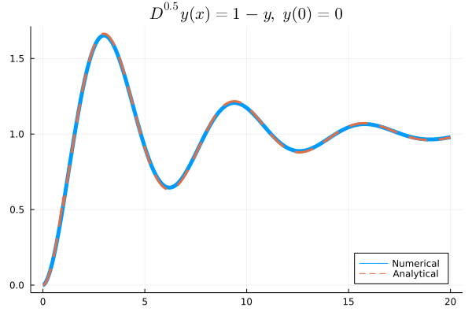

Examples
FDE Example
An easy FDE example
Long story short! Let's try FractionalDiffEq.jl to solve a fractional differential equation!!!
Suppose we have the initial value problem:
\[D^{0.5} y(x)=1-y \\ \\ y(0)=0\]
So to solve the problem, we can use FractionalDiffEq.jl like this:
using FractionalDiffEq, Plots, LaTeXStrings
s="\$D^{0.5}y(x)=1-y,\\ y(0)=0\$"
fun(x, y) = 1-y
prob=FDEProblem(fun, 0.5, 0, 5, 0.001)
result=solve(prob, PECE())
tspan=collect(0:0.001:5)
plot(tspan, result, title=s, linewidth=2, legend=:bottomright)And execute the file in your favorite IDE (VSCode recommend).
Bingo!! You get the result!

Comparison with analytical solution
Let's see if the result computed using FractionalDiffEq.jl is correct compared with analytical solution.
Suppose there is an initial value problem:
\[D^{1.8}y(x)+y(x)=1 \\ y(0)=0,\ y'(0)=0\]
We already know the solution of this fractional differential equation is
\[y(x)=x^{1.8}E_{1.8,\ 2.8}(-x^{1.8})\]
Here, $E$ represent Mittag Leffler function:
\[E_{\alpha,\ \beta}=\displaystyle\sum_{k=0}^{\infty}\frac{z^k}{\Gamma(\alpha k+\beta)}\]
The Mittag Leffler function $E_{\alpha, \beta}$ is build inside the FractionalDiffEq.jl.
using FractionalDiffEq
using Plots
#Analytical solution
target = []
for i in 0:0.01:20
push!(target, i^1.8*mittleff(1.8,2.8,-i^1.8))
end
s="\$D^{1.8}y(x)=1-y(x),\\ y(0)=0\$"
#Numerical solution
fun(x, y) = 1-y
prob = FDEProblem(fun, 1.8, 0, 20, 0.01)
result=solve(prob, PECE())
tspan=collect(0:0.01:20)
gr()
plot(tspan, result, title=s, linewidth=5, label="Numerical", legend=:bottomright)
plot!(tspan, target, lw=3, ls=:dash, label="Analytical")And execute the program you can get:

ODE Example
It is noteworthy that some differential equation solvers in FractionalDiffEq.jl are also capable of solving Ordinary Differential Equations, let's directly see an example here!!
If the IVP is:
\[\frac{d^2y}{dx^2}+\frac{dy}{dx}=\sin(x)\]
\[y(0)=0\]
We already know the analytical solution is
\[\frac{1}{2}(-e^{-x}-\sin(x)-\cos(x)+2)\]
We can use the FODEMatrixDiscrete algorithm to solve this ODE:
using FractionalDiffEq
using Plots, LaTeXStrings
s="\$ODE\\ Example\$"
T = 30
h=0.05
tspan = collect(0.05:h:T)
f(x)=1/2*(-exp(-x)-sin(x)-cos(x)+2)
target=f.(tspan)
eq = D(600, 2, h)+D(600, 1, h)
rightfun(x) = sin(x)
result = solve(eq, rightfun, 2, h, T, FODEMatrixDiscrete())
plot(tspan, result, title=s, legend=:bottomright, label="ODE Numerical Solution!")
plot!(tspan, target, lw=3,ls=:dash,label="ODE Analytical Solution!")And by plotting the numerical and analytical solution, we can see the matrix discrete algorithm in FractionalDiffEq.jl is quite powerful!

While the solver in FractionalDiffEq.jl can solve ordinary differential equations, we still strongly recommend users to use SciML/OrdinaryDiffEq.jl to solve ODEs instead, for various, robust and performant algorithms